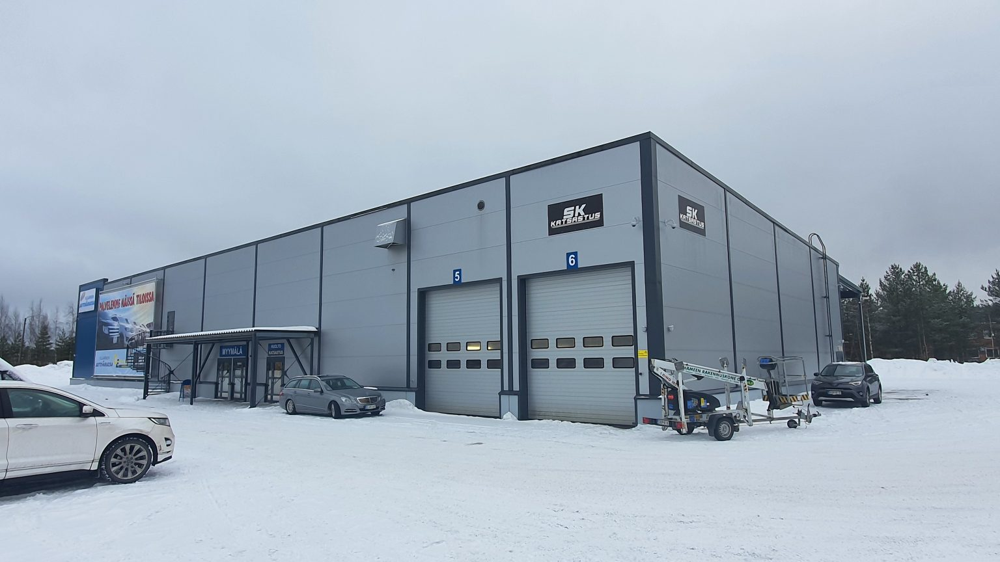

Olemme vuonna 2021 perustettu kotimainen, paikallinen ja asiakasystävällinen katsastusalan yritys pirkanmaalla. Palveluihimme kuuluvat kaikki katsastusaseman palvelut Tampereella Lakalaivankatu 12:ssa. Ylöjärven Pinotie 1:ssä katsastetaan ajoneuvot 5000kg asti.

Ylöjärvi on nyt avattu!
Tevetuloa katsastamaan autosi Ylöjärvelle! avajaisten Kunniaksi katsastus (sisältäen päästömittaukset, viranomaismaksut, MAx 3500kg) 55€
Lue lisääTULE MEILLE TÖIHIN!
Katsastaja x 2 hakusessa! Etsimme tiimiimme lisävahvistusta. Haemme kevyenkaluston määräaikaiskatsastajaa toimipisteeseemme Lakalaivaan Tampereelle, sekä Ylöjärvelle Elovainion lähistölle. Edellytämme sinulta katsastustyöhön vaadittavat kevyen kaluston määräaikaiskatsastajan oikeudet. Erikoiskatsastus-, rekisteröintioikeudet ja raskaan kaluston luvat eivät ole välttämättömät mutta ne katsotaan eduksi. Hakijalta odotamme luotettavuutta, oma-aloitteisuutta ja asiakaspalveluhenkisyyttä. Mikäli edellä mainitut asiat kuvaavat sinua,…
Lue lisääAvaamme pian Ylöjärvelle uuden katsastusaseman!
Asemallamme pystyy katsastamaan kaikki henkilö- ja pakettiautot, kevyet kuorma-autot max 5000kg ja kevytperävaunut. AVAAMME PIAN!! Osoitteemme on Pinotie 1, Ylöjärvi Ja vastaamme avattuamme numerosta: 050 5313212
Lue lisää